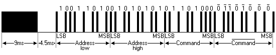
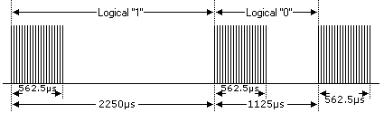
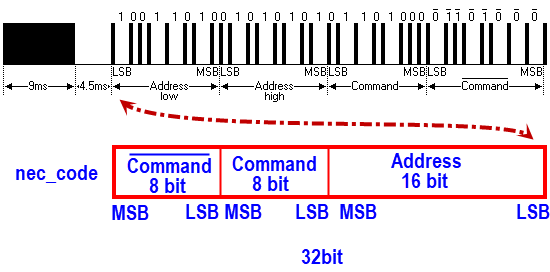
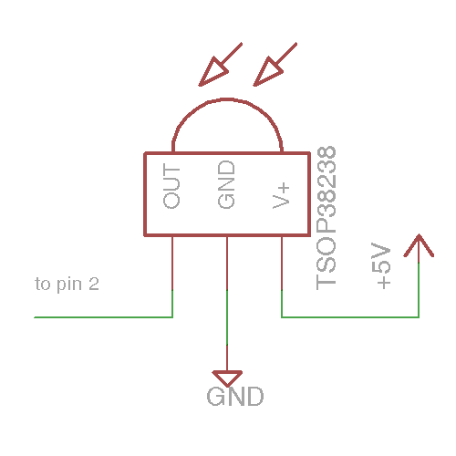

|
  |
   |
| (IRLib2 GitHub) (IRlib2.zip)解壓縮後 將以下資料夾  全部放到Arduino libraries下 (IRLibReference.pdf) Using an Infrared Library on Arduino(ref) |
| 接收 |
 #include "IRLibAll.h" IRrecvPCI myReceiver(2); IRdecode myDecoder; void setup() { Serial.begin(115200); myReceiver.enableIRIn(); // Start the receiver Serial.println("Ready to receive IR signals"); } void loop() { if (myReceiver.getResults()) { myDecoder.decode(); //Decode it myDecoder.dumpResults(false); //Now print results. Use true for more detail myReceiver.enableIRIn(); //Restart receiver } } //先使用此程式 找出 遙控器 key code //在使用下面程式 做控制應用 //Key CH-
|
| //顯示於I2C LCD #include <LiquidCrystal_I2C.h> LiquidCrystal_I2C lcd(0x3F,16,2); #include <IRLibAll.h> uint32_t val; //Create a receiver object to listen on pin 2 IRrecvPCI myReceiver(2); //Create a decoder object IRdecode myDecoder; void setup() { lcd.init(); lcd.backlight(); lcd.setCursor(0, 0); myReceiver.enableIRIn(); // Start the receiver lcd.setCursor(0, 0); lcd.print("Ready to receive"); } void loop() { //Continue looping until you get a complete signal received if (myReceiver.getResults()) { myDecoder.decode(); //Decode it val=myDecoder.value; if(val==0xFFFFFFFF) {lcd.setCursor(0, 1); lcd.print("Reapeat"); } else if(val==0) {lcd.clear(); lcd.setCursor(0, 0); lcd.print("unknown protocol"); } else {lcd.clear(); lcd.setCursor(0, 0); lcd.print("Code:"); lcd.setCursor(5, 0); lcd.print(val,HEX); } } myReceiver.enableIRIn(); //Restart receiver } |
//使用遙控器 控制LED +Serial #include <IRLibAll.h> #define led 13 IRrecvPCI myReceiver(2); IRdecode myDecoder; uint32_t val; void setup() { pinMode(led,OUTPUT); Serial.begin(9600); myReceiver.enableIRIn(); // Start the receiver Serial.println("Ready to receive IR signals"); } void loop() { if (myReceiver.getResults()) { myDecoder.decode(); //Decode it val=myDecoder.value; Serial.println(val,HEX); if (val==0xFFA25D) digitalWrite(led,1);//key :CH- if (val==0xFF629D) digitalWrite(led,0);//key: CH myReceiver.enableIRIn(); //Restart receiver } } |
| //LCD顯示+遙控 #include <LiquidCrystal_I2C.h> LiquidCrystal_I2C lcd(0x3F,16,2); #include <IRLibAll.h> #define led 13 IRrecvPCI myReceiver(2); IRdecode myDecoder; uint32_t val; void setup() { pinMode(led,OUTPUT); lcd.init(); lcd.backlight(); lcd.setCursor(0, 0); myReceiver.enableIRIn(); // Start the receiver lcd.setCursor(0, 0); lcd.print("Ready to receive"); } void loop() { if (myReceiver.getResults()) { myDecoder.decode(); //Decode it val=myDecoder.value; if(val==0xFFFFFFFF) {lcd.setCursor(0, 1); lcd.print("Reapeat"); } else if(val==0) {lcd.clear(); lcd.setCursor(0, 0); lcd.print("unknown protocol"); } else {if (val==0xFFA25D) digitalWrite(led,1);//key :CH- if (val==0xFF629D) digitalWrite(led,0);//key: CH lcd.clear(); lcd.setCursor(0, 0); lcd.print("Code:"); lcd.setCursor(5, 0); lcd.print(val,HEX); } myReceiver.enableIRIn(); //Restart receiver } } |
| 控制繼電器 控制夾爪 控制輪型機器人 |